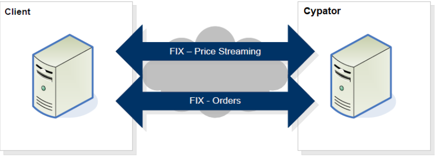

Introduction
FIX Introduction
This document details the Financial Information eXchange (FIX) protocol used by the Cypator Crypto trading ECN. Cypator uses the FIX protocol to stream (Taker API), retrieve (Maker API) prices, and handle orders for FX Spot with a counterparty, referred to generically in this document as the “Client”.
To communicate with the ECN via the FIX protocol, there must be IP connectivity between Cypator and the Client, and the Client must initiate the connection. The Client must support the FIX 4.4 or FIX 4.2 protocol to communicate properly with the ECN.
The diagram below presents a high-level overview of the FIX-based FX electronic dealing
architecture.
Cypator provides two FIX sessions for interaction with Clients. The first session is specifically for price communication and the second is for trading. Clients need to ensure that the appropriate session is used when messages are sent to the ECN.
This document defines the Cypator FIX API for sending out market prices, receiving orders and providing trading execution notifications via the Cypator FIX gateway
- The FIX gateway is accessible with an OpenVPN connection.
- There are two interfaces: FIX Market data (price) and FIX Trading (orders).
- FIX Trading and Fix Market data require a valid SenderCompId, login, and password specified in the Logon message.
- The protocol is based on FIX protocol 4.4 FIX protocol 4.4. Refer to FIX 4.4 documentation if there is no tag information specified.
- FIX 4.2 is also supported, but is more limited and less recommended
- The FIX gateway supports a subset of messages and tags listed in this document.
- Price is represented in natural value (e.g. 25000.01 for BTC/USD).

FIX Connectivity
- The following are the ways a client can connect to the API:
- Internet over VPN
- VPN connectivity is routed to the nearest geographical instance - New York, London, or Singapore.
- Access to the platform has to go through SSL encrypted TCP connection over the Internet. If needed, Cypator can provide all necessary keys and certifications.
- Only one market and trade connection per client is supported.
FIX Session Time
- The session will be up the full week with a 3-minute scheduled restart on a weekly basis every Sunday. The exact time for restart will be scheduled with the client.
- StartDay=Sunday
- EndDay=Sunday
- StartTime=07:03:00
- EndTime=07:00:00
FIX Sessions
- The Cypator trading interface supports the two types of orders
- Limit
- Market
- The Cypator trading interface supports the following Time in force (TIF):
- IOC - Immediate or Cancel
- FOK - Fill or kill
- Market - Best attempt at market price
FIX Post Trade
For clients or partners requiring a post-trade message (supported only for Taker API), and that can code to the Cypator FIX API the following Trade Capture Report (AE) message will be sent. In addition, in the event of a communication breakdown, the client can send a “Request Trade Capture Report” message and include in it all the Order IDs for which they want to verify if a trade was created or not.
FIX Messages, Products and Support
- The API supports the following:
- FIX version 4.4 (recommended) and 4.2
- Single session or Dual session.
- Product type - Spot trading only.
- Assets - any crypto coin and FIAT currency are supported. Limitations on what Assets are allowed are defined in the application and business agreement.
- For FIX 4.2 and FIX 4.4 dual sessions - if we receive a message on the wrong session- it will be rejected. In addition, FIX 4.2 doesn’t support all message types.
FIX Duplicate check (recovery)
Taker API
There is always a possibility of duplicate trades being sent out. For example due to a network disconnection. The client is expected to be able to identify duplicate trades and reject them, by using the tag OrderID (37) with the combination of tags PossDupFlag (43) or OrigSendingTime (122).
Maker API
Gap-fill (recovery) for Maker API is disabled by default to prevent sending out old orders that are no longer relevant. In case a Resend Request (35=2) from the maker side is sent: we will reply with Sequence Reset (35=4) and the latest NewSeqNo (36).
We can enable Gap-fill but it is not recommended.
FIX Header and Trailer
The following defines the FIX messages standard header and trailer.
Header
| Tag | Name | Mandatory |
|---|---|---|
| 8 | BeginString | Y |
| 9 | BodyLength | Y |
| 34 | MsgSeqNum | Y |
| 35 | MsgType | Y |
| 49 | SenderCompID | Y |
| 50 | SenderSubID | Y |
| 52 | SendingTime | Y |
| 56 | TargetCompID | Y |
| 43 | PossDupFlag | N |
| 122 | OrigSendingTime | N |
Trailer
| Tag | Name | Mandatory |
|---|---|---|
| 10 | CheckSum | Y |
Websocket API Introduction
Cypator websocket provides two websocket session for communication.
- Market session - used for market data subscription requests and streaming prices.
- Trade session - used for sending orders and receiving execution reports.
Market and Trade session require valid login, server identifier, client identifier and password(used only for hashing) for authentication.
Websocket API Connectivity
- Only one market and trade connection per client supported, on new connection previous connection will be dropped.
- When the trade session goes down market data feed will not be consumed (Maker API) even if the market session is connected. Market data snapshot consumption will resume after the trade session is reconnected.
- Both market and trade session needs to be authenticated before any requests can be made.
- To keep alive both the market and trade session, the client needs to send a ping message every 30 seconds.
Websocket API Sessions
The Cypator market websocket session supports the following subscription type:
- Snapshot
The Cypator market websocket session supports the following book type:
- Spot
The Cypator trading websocket session supports the two types of orders
- Limit
- Market
The Cypator trading websocket session supports the following Time in force (TIF):
- IOC - Immediate or Cancel
- FOK - Fill or kill
Environments
Cypator offer a UAT environment for client testing along with the Production environment.
Production
When onBoarding is done, Cypator will issue all the credentials necessary to connect to the production environment.
UAT
Cypator User Acceptance Testing (UAT) environment provides full trading capabilities allowing you to test any part of the Taker and Maker API
for Both FIX and WebSocket Protocol.
Please note that your experience in UAT environments may differ slightly from that of the current production implementation and undergoes regular maintenance.
Please contact us to start onBoarding and receive the necessary credentials to login.
Once your UAT account has been set up, we will provide you a URL linke to be able to start and stop your environment on demand.
FIX Taker API
Logon
FIX 4.4 Client -> Cypator
This message is sent to initiate a FIX session and establishes the communication session, authenticates the connecting client, and initializes the message sequence number.
8=FIX.4.4|9=79|35=A|49=cc11|56=cs1|34=1|52=20221031-07:40:55|98=0|108=20|553=User1|554=123456|10=034|
FIX 4.4 Cypator -> Client
8=FIX.4.4|9=62|35=A|34=1|49=cs1|52=20221031-07:40:55.074|56=cc11|98=0|108=20|10=039|
FIX 4.2 Client -> Cypator
8=FIX.4.2|9=58|35=A|49=cc21|56=cs1|34=1|52=20221031-07:41:49|98=0|108=20|10=102|
FIX 4.2 Cypator -> Client
8=FIX.4.2|9=62|35=A|34=1|49=cs1|52=20221031-07:41:50.005|56=cc21|98=0|108=20|10=028|
| Tag | Name | Mandatory | Description |
|---|---|---|---|
| 35 | MsgType | Y | A |
| 98 | EncryptMethod | Y | Y |
| 108 | HeartBtInt | Y | Y |
| 141 | ResetSeqNumFlag | N | Indicated that both parties of the FIX Session should reset their sequence numbers |
| 553 | Username | Y | Available only in FIX 4.4 |
| 554 | Password | Y | Available only in FIX 4.4 |
Heartbeat
This message is sent during periods of application inactivity to ensure connection validity. The receiving party should always respond with a heartbeat message.
| Tag | Name | Mandatory | Description |
|---|---|---|---|
| 35 | MsgType | Y | 0 |
| 98 | TestReqID | N | Required only when the heartbeat is in response to a Test Request Message |
Test Request
This message is used to verify connectivity and synchronize sequence numbers. A test request should be responded to with a heartbeat from the recipient
| Tag | Name | Mandatory | Description |
|---|---|---|---|
| 35 | MsgType | Y | 1 |
| 98 | TestReqID | Identifier to be returned in Heartbeat response |
Logout
This message signals the normal termination of the trading session. A session terminated without a Logout message will be considered an abnormal condition.
| Tag | Name | Mandatory | Description |
|---|---|---|---|
| 35 | MsgType | Y | 5 |
| 55 | Text | N |
Market Data Request
Once the logon process is complete, Market Data Requests can be sent to the ECN. Cypator will respond immediately with either a Market Data Full Refresh (35=W) message or a Market Data Request Reject message (35=Y). Only a single product can be requested in each request. The client will receive both bid and ask prices in a single message. The ECN also supports layers (also known elsewhere as price bands or tiers). Quotes containing bid prices and quantities for all layers are always streamed in the same message, as is the case for quotes containing ask prices and quantities.
This message is used to subscribe/unsubscribe to market data rate information.
FIX 4.4 Client -> Cypator subscribe
8=FIX.4.4|9=99|35=V|49=cc12|56=cs1|34=8|52=20221031-07:43:44|262=1|263=1|264=0|146=1|55=BTC/USD|267=2|269=0|269=1|10=095|
FIX 4.2 Client -> Cypator subscribe
8=FIX.4.2|9=99|35=V|49=cc22|56=cs1|34=3|52=20221031-08:34:43|262=1|263=1|264=0|146=1|55=BTC/USD|267=2|269=0|269=1|10=089|
FIX 4.4 Client -> Cypator Unsubscribe
8=FIX.4.4|9=99|35=V|49=cc12|56=cs1|34=7|52=20221031-08:35:17|262=1|263=2|264=0|146=1|55=BTC/USD|267=2|269=0|269=1|10=097|
FIX 4.4 Client -> Cypator Unsubscribe
8=FIX.4.2|9=99|35=V|49=cc22|56=cs1|34=5|52=20221031-08:34:55|262=1|263=2|264=0|146=1|55=BTC/USD|267=2|269=0|269=1|10=095|
| Tag | Name | Mandatory | Description |
|---|---|---|---|
| 35 | MsgType | Y | V |
| 262 | MDReqID | Y | Unique Market Data Request ID. This will be used in responses by Cypator or by the client to cancel a request. To unsubscribe from market data, the same ID must be sent with tag 263 = 2 |
| 263 | SubscriptionRequestType | Y | 1 – Snapshot + Updates (Subscribe) 2 – Disable Snapshot + Updates (Unsubscribe) |
| 264 | MarketDepth | Y | 0 - Full Book 1 = Top of Book |
| 265 | MDUpdateType | N | 0 - Full refresh |
| 266 | AggregatedBook | Y | N - Raw prices may or may not include the liquidity provider names. |
| 267 | NoMDEntryTypes | Y | Number of MDEntryType fields being requested. 2 - bid and offer Note – please make sure to request in tag 269 both Bid and Offer. Request for a single side will be rejected!!! |
| -> 269 |
MDEntryType | Y | Market Data entries types list: 0 - Bid 1 - Offer Repeated field: 269=0, 269=1 |
| 146 | NoRelatedSym | Y | 1 ( we allow only a single asset per subscription) |
| -> 55 |
Symbol | Y | Asset - “BTC/USD” |
| -> 64 |
FutSettDate | N | Value date YYYYMMDD. Currently unused, will be used once forward is supported. |
Market Data Request Reject
FIX 4.4 Cypator -> Client
8=FIX.4.4|9=85|35=Y|34=106|49=cs1|52=20221031-09:03:57.488|56=cc12|58=Duplicate MDReqID|262=1|281=1|10=094|
FIX 4.2 Cypator -> Client
8=FIX.4.2|9=84|35=Y|34=84|49=cs1|52=20221031-08:58:35.817|56=cc22|58=Duplicate MDReqID|262=1|281=1|10=050|
| Tag | Name | Mandatory | Description |
|---|---|---|---|
| 35 | MsgType | Y | Y |
| 262 | MDReqID | Y | The Unique ID of the received market data |
| 281 | MDReqRejReason | N | Reason for rejection 0 - Unknown Symbol 1 - Duplicate MDReqID 2 - Request not supported 3 - Insufficient Permissions |
Market Data Snapshot Full
FIX 4.4 Cypator -> Client
8=FIX.4.4|9=710|35=W|34=8|49=cs1|52=20221031-08:35:11.416|56=cc12|55=BTC/USD|262=1|268=20|269=0|270=202.15|271=0.00000001|269=0|270=202.16|271=0.00000002|269=0|270=202.17|271=0.00000003|269=0|270=202.18|271=0.00000004|269=0|270=202.19|271=0.00000005|269=0|270=202.2|271=0.00000006|269=0|270=202.21|271=0.00000007|269=0|270=202.22|271=0.00000008|269=0|270=202.23|271=0.00000009|269=0|270=202.24|271=0.0000001|269=1|270=202.35|271=0.00000001|269=1|270=202.36|271=0.00000002|269=1|270=202.37|271=0.00000003|269=1|270=202.38|271=0.00000004|269=1|270=202.39|271=0.00000005|269=1|270=202.4|271=0.00000006|269=1|270=202.41|271=0.00000007|269=1|270=202.42|271=0.00000008|269=1|270=202.43|271=0.00000009|269=1|270=202.44|271=0.0000001|10=073|
FIX 4.2 Cypator -> Client
8=FIX.4.2|9=710|35=W|34=3|49=cs1|52=20221031-08:34:44.164|56=cc22|55=BTC/USD|262=1|268=20|269=0|270=202.15|271=0.00000001|269=0|270=202.16|271=0.00000002|269=0|270=202.17|271=0.00000003|269=0|270=202.18|271=0.00000004|269=0|270=202.19|271=0.00000005|269=0|270=202.2|271=0.00000006|269=0|270=202.21|271=0.00000007|269=0|270=202.22|271=0.00000008|269=0|270=202.23|271=0.00000009|269=0|270=202.24|271=0.0000001|269=1|270=202.35|271=0.00000001|269=1|270=202.36|271=0.00000002|269=1|270=202.37|271=0.00000003|269=1|270=202.38|271=0.00000004|269=1|270=202.39|271=0.00000005|269=1|270=202.4|271=0.00000006|269=1|270=202.41|271=0.00000007|269=1|270=202.42|271=0.00000008|269=1|270=202.43|271=0.00000009|269=1|270=202.44|271=0.0000001|10=072|
| Tag | Name | Mandatory | Description |
|---|---|---|---|
| 35 | MsgType | Y | W |
| 262 | MDReqID | Y | The Unique ID of the received market data request |
| 55 | Symbol | Y | e.g “BTC/USD” |
| 268 | NoMDEntries | Y | No. of market data updates in the message |
| -> 269 |
MDEntryType | Y | ‘0’ (Bid) ‘1’ (Offer) |
| -> 270 |
MDEntryPx | Y | Price of entry |
| -> 271 |
MDEntrySize | Y | Quantity of entry |
In the event Cypator disables an instrument, it will send a message to the Taker side to clear its book for that instrument. This is done in order to prevent a reject or timeout for an order generated after the disablement of the instrument. The clear book message will be the standard 35=W message per instrument with 268=0. An example of the message:
FIX 4.4 Cypator -> Client
8=FIX.4.4|9=100|35=W|34=268|49=cs1|52=20230619-09:45:58.883|56=cc12|55=ETH/USD|262=1|268=0|10=184|
FIX 4.2 Cypator -> Client
8=FIX.4.2|9=100|35=W|34=268|49=cs1|52=20230619-09:45:58.883|56=cc12|55=ETH/USD|262=1|268=0|10=184|
New Order Single
A new order single message enables the client to send a request for a trade to the ECN. Cypator requires that the ClOrdID <11> be unique.
FIX 4.4 Client -> Cypator
8=FIX.4.4|9=133|35=D|49=cc11|56=cs1|34=113|52=20221031-09:10:46|11=1598950759|21=1|55=BTC/USD|54=1|60=20221031-09:10:46|40=2|44=19123.20|38=100|59=4|10=003|
FIX 4.2 Client -> Cypator
8=FIX.4.2|9=133|35=D|49=cc21|56=cs1|34=113|52=20221031-09:11:04|11=1805964193|21=1|55=BTC/USD|54=1|60=20221031-09:11:04|40=2|44=19123.20|38=100|59=4|10=23
| Tag | Name | Mandatory | Description |
|---|---|---|---|
| 35 | MsgType | Y | D |
| 11 | ClOrdID | Y | Client Order ID – must be unique |
| 1 | Account | N | Client Account name |
| 60 | TransactTime | Y | The transaction timestamp of the orde |
| 15 | Currency | N | The currency or coin unit that represents the quantity |
| 54 | Side | Y | 1 (Buy) 2 (Sell) |
| 55 | Symbol | Y | The Asset - Coin and currency combination, e.g EUR/USD, BTC/USD, ETH/BTC |
| 38 | OrderQty | Y | The order quantity |
| 40 | OrdType | Y | 1 – Market 2 – Limit |
| 44 | Price | Y | Limit price if 40=2 If 40=1 the price is required for pre trade credit check |
| 59 | TimeInForce | Y | 1 – Good Till Cancel 3 – Immediate or Cancel (Default if no value provided) 4 – Fill or Kill Note: OrdType=1 only supports TimeInForce=3 (IOC) |
| 64 | FutSettDate (FIX 4.2) SettlDate (FIX 4.4) |
N | Value date YYYYMMDD. Required for forward Will be supported in the future. Use FutSettDate if using FIX 4.2 Use SettlDate if using FIX 4.4 |
| 126 | ExpireTime | N | Not supported in phase 1- Required for Good-Till-Date order request. Date and Time of the order expiration specified in YYYYMMDD-HH:MM:SS format. Expressed in GMT. |
Order Reject
This message is used by Cypator to reject an order message. This can happen if the order doesn’t comply with the FIX dictionary, naming issue, or exceeding throughput limitation
| Tag | Name | Mandatory | Description |
|---|---|---|---|
| 35 | MsgType | Y | 3 |
| 45 | RefSeqNum | Y | Integer value -reference of the rejected order header sequence number MsgSeqNum <34> |
| 371 | RefTagID | N | The tag number of the FIX field being referenced |
| 372 | RefMsgType | N | The message type (35) OF THE Fix message being referenced (e.g “D” for 35=D) |
| 373 | SessionRejectReason | N | Code to identify reason for rejection: 0 = Invalid tag number 1 = Required tag missing 2 = Tag not defined for this message type 3 = Undefined Tag 4 = Tag specified without a value 5 = Value is incorrect (out of range) for this tag 6 = Incorrect data format for value 7 = Decryption problem 8 = Signature <89> problem 9 = CompID problem 10 = SendingTime <52> accuracy problem 11 = Invalid MsgType <35> 12 = XML Validation error 13 = Tag appears more than once 14 = Tag specified out of required order 15 = Repeating group fields out of order 16 = Incorrect NumInGroup count for repeating group 17 = Non "Data" value includes field delimiter ( 99 = Other |
| 58 | Text | N | Error message text |
Execution Report
This message is used to communicate Order Ack, Order Reject, Order Fill and Order Status Responses.
- There are Four possible 35=8 responses to an order
- Ack - 150 =0
- NACK - 150=8
- Fill - partial - 150 =2/F, 39=1
- Fill - full - 150 =2/F, 39=2
For a FOK type order, there are two possible responses – as an example if the order is for 5 BTC/USD
Scenario 1 – FOK – order is not filled - CANCEL
| Sequence | Message |
|---|---|
| Cancel message is provided | Execution report (35=8) ExecType (150=4) OrdStatus (39=4) |
Scenario 2 – FOK – order is fully filled - DONE
| Sequence | Message |
|---|---|
| Full Fill message is provided for 5 BTC | Execution report (35=8) ExecType (150=2/F) OrdStatus (39=2) |
For an IOC type order, there are two additional possible responses in addition to the ones above which may happen in the case of multiple partial fills. We use the OrdStatus tag to indicate if the order is partial or fully complete – as an example if the order is for 5 BTCUSD
Scenario1 – IOC – order is fully filled - DONE
| Sequence | Message |
|---|---|
| Fill message for 2 BTC is provided | Execution report (35=8) ExecType (150=2/F) OrdStatus (39=1) |
| Cancel remaining message is provided for the remaining 3 BTC | Execution report (35=8) ExecType (150=4) OrdStatus (39=1) |
FIX 4.4 Cypator -> Client Ack
8=FIX.4.4|9=197|35=8|34=112|49=cs1|52=20221031-09:10:46.686|56=cc11|11=1598950759|14=0|15=BTC|17=1598950759|32=0|37=A010tlPyxyg|39=0|41=1598950759|44=19123.2|54=1|55=BTC/USD|60=20221031-11:10:46.686|150=0|151=100|10=012|
FIX 4.2 Cypator -> Client Ack
8=FIX.4.2|9=197|35=8|34=113|49=cs1|52=20221031-09:11:04.479|56=cc21|11=1805964193|14=0|15=BTC|17=1805964193|20=0|32=0|37=A010tlPyxyh|39=0|41=1805964193|44=19123.2|54=1|55=BTC/USD|60=20221031-11:11:04.479|150=0|151=100|10=223|
FIX 4.4 Cypator -> Client
8=FIX.4.4|9=228|35=8|34=113|49=cs1|52=20221031-09:10:46.706|56=cc11|6=19123.2|11=1598950759|14=100|15=BTC|17=VuzGNOBG|31=19123.2|32=100|37=A010tlPyxyg|38=100|39=2|41=1598950759|44=19123.2|54=1|55=BTC/USD|60=20221031-11:10:46.706|64=202210304|150=F|151=0|10=153|
FIX 4.2 Cypator -> Client
8=FIX.4.2|9=228|35=8|34=114|49=cs1|52=20221031-09:11:04.480|56=cc21|6=19123.2|11=1805964193|14=100|15=BTC|17=CAfoHyfD|20=2|31=19123.2|32=100|37=A010tlPyxyh|38=100|39=2|41=1805964193|44=19123.2|54=1|55=BTC/USD|60=20221031-11:11:04.480|64=202210304|150=2|151=0|10=136|
| Tag | Name | Mandatory | Description |
|---|---|---|---|
| 35 | MsgType | Y | 8 |
| 1 | Account | N | Client Account Name |
| 11 | ClOrdID | Y | Client Order ID |
| 37 | OrderID | Y | Cypator unique order ID for the Trade |
| 17 | ExecID | N | Cypator Execution ID. Unique ID in each execution report. case sensitive |
| 20 | ExecTransType | Y - FIX 4.2 N- FIX 4.4 |
Only applicable to Fix 4.2 0= New 1 = Cancel 2 = Correct |
| 150 | ExecType | Y | FIX 4.2 0 = New 1 = Partially Fill 2 = Fill 4 = Canceled 8 = Rejected FIX 4.4 0 = New F = Trade (partial fill or fill) 4 = Canceled 8 = Rejected |
| 39 | OrdStatus | Y | 0 = New 1 = Partially Fill 2 = Fill 4 = Canceled 8 = Rejected |
| 64 | FutSettDate | N | Settlement date for order fills if exists. In YYYYMMDD format (please see comment below regarding the nature of the date) |
| 15 | Currency | N | The currency or coin unit that represents the quantity |
| 54 | Side | Y | 1 (Buy) 2 (Sell) |
| 55 | Symbol | Y | The Asset - Coin and currency combination, e.g. EUR/USD, BTC/USD, ETH/BTC |
| 38 | OrderQty | N | Order quantity specified by the Client. Not present in Order Reject |
| 14 | CumQty | Y | The amount that has been filled so far |
| 6 | AvgPx | N | Average price of all fills on for the order |
| 31 | LastPx | N | Trade price. |
| 32 | LastQty (For Fix4.4) LastShares (For Fix4.2) |
Y | Amount bought or sold on this fill |
| 44 | Price | Y | Order price |
| 151 | LeavesQty | Y | Quantity remaining of this order |
| 60 | TransactTime | Y | The transaction timestamp of the order |
| 103 | OrdRejReason | N | Error code. Present in Order Reject |
| 58 | Text | N | Error message. Present in Order Reject |
Order Cancel Request
This message is used by the client to cancel any live order they may have. Applicable for orders of type GTC.
In case Cypator is unable to cancel the order a Cancel Rejected (35=9) message will be sent as a response.
In case Cypator was able to cancel the order an Execution Report (35=8) with status cancel for OrdStatus and ExecType (39=4, 150=0) will be sent back.
2 – Order Cancel/Replace Request | | 102 | CxlRejReason | N | 1 – Order Cancel Request
2 – Order Cancel/Replace Request | | 58 | Text | N | Error message | | 60 | TransactTime | Y | The transaction timestamp of the order cancel request | ## Trade Capture Report Used to report a trade between counterparties. > FIX 4.4 Cypator -> Client ```plaintext 8=FIX.4.4|9=239|35=AE|34=2|49=cs1|52=20221031-09:43:02.535|56=cc11|17=s1|31=1234.56|32=0.00025|55=BTC/USD|60=20221030-10:10:28.629|75=20190824|150=F|487=0|568=HjdFFY13|571=A010tlPGF9S|748=1|912=Y|552=1|54=1|37=s3|11=123546|453=1|448=1|447=C|452=17|15=BTC|10=031 ``` | Tag | Name | Mandatory | Description | |-----|--------------------------|-----------|----------------------------------------------------------------------------------------------------------------| | 35 | MsgType | Y | AE | | 571 | TradeReportID | Y | ID for this message | | 60 | TransactTime | Y | The transaction timestamp of the order UTC | | 487 | TradeReportTransType | Y | 0-New | | 75 | TradeDate | Y | Trade date in YYYYMMDD format. We use the creation date based on Transact time UTC | | 568 | TradeRequestID | N | Request ID if the Trade Capture Report
Side | Y | Trading Party | | 11 | ->
ClOrdID | Y | Order ID of the Trading party | | 37 | ->
OrderID | Y | Cypator unique order ID for the Trade | | 15 | ->
Currency/Coin | N | Identifies currency or coin used for price | | 453 | ->
NoPartyIDs | N | Number of parties | | 448 | ->->
PartyID | N | ID of the counterparty | | 447 | ->->
PartyIDSource | N | C – Generally accepted market participant | | 452 | ->->
PartyRole | N | The role of the party 17 – Contra Firm (the counterparty) | ## Request Trade Capture Report In the event of a communication breakdown, or any other prerogative the client can send a “Request Trade Capture Report” message and include in it the Order Id for which they want to verify if a trade was created or not using ClOrdID <11>. The system will respond with AE drop copy messages for all created trades. Please note – an Order (if not of type FOK) may result in several trades and may be partially filled. The system will respond with all trades related to an order. > FIX 4.4 Client -> Cypator ```plaintext 8=FIX.4.4|9=76|35=AD|49=cc11|56=cs1|34=3|52=20221031-09:43:02|568=HjdFFY13|569=1|11=123546|10=182| ``` | Tag | Name | Mandatory | Description | |-----|------------------|-----------|----------------------------------------------------------------------------------------------------------------------------------| | 35 | MsgType | Y | AD | | 568 | TradeRequestID | Y | Identifier of the trade request | | 569 | TradeRequestType | Y | 1 = Matched trades matching Criteria provided on request (parties, exec id, trade id, order id, instrument, input source, etc.) | | 11 | ClOrdID | Y | Unique identifier for Order as assigned by the client. | ## Trade Capture Report Request Ack Indicate that no trades were found that matched the selection criteria specified on the Trade Capture Report Request (AQ). * No Trade - In this case the AQ msg is provided with Tag 750 =1 (Completed). * In the event that system is unable to provide a response the AQ msg is provided with Tag 750=2 (Rejected) and a reason will be provided in Tag 58 * In the event the order has been “Timed Out” the AQ msg is provided with Tag 750=0 and a reason will be provided in Tag 58 “Time out”. In this case you can continue every 5 seconds to retry the Trade capture request (AD) until a final response is received. > FIX 4.4 Cypator -> Client ```plaintext 8=FIX.4.4|9=88|35=AQ|34=2|49=cs1|52=20221031-09:51:41.171|56=cc11|568=HjdFFY13|569=1|748=0|749=0|750=0|10=230 ``` | Tag | Name | Mandatory | Description | |-----|--------------------|-----------|-----------------------------------------------------------------------------------------------------------------------------------------------------------------------------------------------------------------------------------------------------------------------------------------------------------------------------------------------------------------------------------------------------------| | 35 | MsgType | Y | AQ | | 568 | TradeRequestID | Y | Identifier of the trade request | | 569 | TradeRequestType | Y | Type of trade capture report:
1 = Matched trades matching Criteria provided on request (parties, exec id, trade id, order id, instrument, input source, etc.) | | 748 | TotNumTradeReports | N | Number of trade reports returned - if this report is part of a response to a Trade Capture Report Request
0 = Successful (Default)
1 = Invalid or unknown instrument
2 = Invalid type of trade requested
3 = Invalid parties
4 = Invalid Transport Type requested
5 = Invalid Destination requested
8 = TradeRequestType <569> not supported
9 = Unauthorized for Trade Capture Report Request
99 = Other | | 750 | TradeRequestStatus | Y | Status of trade request. Valid values
0 = Accepted
1 = Completed
2 = Rejected | | 58 | Text | N | Free text | # FIX Maker API ## Logon This message is sent to initiate a FIX session and establishes the communication session, authenticates the connecting Maker, and initializes the message sequence number. > FIX 4.4 Client -> Cypator ```plaintext 8=FIX.4.4|9=79|35=A|49=cc11|56=cs1|34=1|52=20221031-07:40:55|98=0|108=20|553=User1|554=123456|10=034| ``` > FIX 4.4 Cypator -> Client ```plaintext 8=FIX.4.4|9=62|35=A|34=1|49=cs1|52=20221031-07:40:55.074|56=cc11|98=0|108=20|10=039| ``` > FIX 4.2 Client -> Cypator ```plaintext 8=FIX.4.2|9=58|35=A|49=cc21|56=cs1|34=1|52=20221031-07:41:49|98=0|108=20|10=102| ``` > FIX 4.2 Cypator -> Client ```plaintext 8=FIX.4.2|9=62|35=A|34=1|49=cs1|52=20221031-07:41:50.005|56=cc21|98=0|108=20|10=028| ``` | Tag | Name | Mandatory | Description | |-----|-----------------|-----------|------------------------------------------------------------------------------------| | 35 | MsgType | Y | A | | 98 | EncryptMethod | Y | Y | | 108 | HeartBtInt | Y | Y | | 141 | ResetSeqNumFlag | N | Indicated that both parties of the FIX Session should reset their sequence numbers | | 553 | Username | N | Available only in FIX 4.4 | | 554 | Password | N | Available only in FIX 4.4 | ## Heartbeat This message is sent during periods of application inactivity to ensure connection validity. The receiving party should always respond with a heartbeat message. | Tag | Name | Mandatory | Description | |-----|------------|-----------|----------------------------------------------------------------------------| | 35 | MsgType | Y | 0 | | 98 | TestReqID | N | Required only when the heartbeat is in response to a Test Request Message | ## Test Request This message is used to verify connectivity and synchronize sequence numbers. A test request should be responded to with a heartbeat from recipient | Tag | Name | Mandatory | Description | |-----|------------|-----------|--------------------------------------------------| | 35 | MsgType | Y | 1 | | 98 | TestReqID | Y | Identifier to be returned in Heartbeat response | ## Logout This message signals the normal termination of the trading session. A session terminated without a Logout message will be considered an abnormal condition. | Tag | Name | Mandatory | Description | |-----|----------|-----------|-------------| | 35 | MsgType | Y | 5 | | 55 | Text | N | | ## Market Data Request Once the logon process is complete, Market Data Requests can be sent to the Maker. The Maker will respond immediately with either a Market Data Full Refresh (35=W) message or a Market Data Request Reject message (35=Y). Only a single request will be sent for each market data request. The ECN also supports layers (also known elsewhere as price bands or tiers). Quotes containing bid prices and quantities for all layers are always streamed in the same message, as is the case for quotes containing ask prices and quantities. This message is used to subscribe/unsubscribe to market data rate information. > FIX 4.4 Cypator -> Client subscribe ```plaintext 8=FIX.4.4|9=99|35=V|49=cc12|56=cs1|34=8|52=20221031-07:43:44|262=1|263=1|264=0|146=1|55=BTC/USD|267=2|269=0|269=1|10=095| ``` > FIX 4.2 Cypator -> Client subscribe ```plaintext 8=FIX.4.2|9=99|35=V|49=cc22|56=cs1|34=3|52=20221031-08:34:43|262=1|263=1|264=0|146=1|55=BTC/USD|267=2|269=0|269=1|10=089| ``` > FIX 4.4 Cypator -> Client Unsubscribe ```plaintext 8=FIX.4.4|9=99|35=V|49=cc12|56=cs1|34=7|52=20221031-08:35:17|262=1|263=2|264=0|146=1|55=BTC/USD|267=2|269=0|269=1|10=097| ``` > FIX 4.4 Cypator -> Client Unsubscribe ```plaintext 8=FIX.4.2|9=99|35=V|49=cc22|56=cs1|34=5|52=20221031-08:34:55|262=1|263=2|264=0|146=1|55=BTC/USD|267=2|269=0|269=1|10=095| ``` | Tag | Name | Mandatory | Description | |-------------|-------------------------|-----------|--------------------------------------------------------------------------------------------------------------------------------------------------------------------------------------------| | 35 | MsgType | Y | V | | 262 | MDReqID | Y | Unique Market Data Request ID. This will be used in responses by Cypator or by the client to cancel a request. To unsubscribe from market data, the same ID must be sent with tag 263 = 2 | | 263 | SubscriptionRequestType | Y | 1 – Snapshot + Updates (Subscribe)
2 – Disable Snapshot + Updates (Unsubscribe) | | 264 | MarketDepth | Y | 0 - Full Book | | 265 | MDUpdateType | N | 0 - Full refresh | | 266 | AggregatedBook | Y | N - Raw prices may or may not include the liquidity provider names. | | 267 | NoMDEntryTypes | Y | Number of MDEntryType fields being requested. 2 - bid and offer
Note – please make sure to request in tag 269 both Bid and Offer. Request for a single side will be rejected!!! | | ->
269 | MDEntryType | Y | Market Data entries types list:
0 - Bid
1 - Offer
Repeated field: 269=0, 269=1 | | 146 | NoRelatedSym | Y | 1 ( we allow only a single asset per subscription) | | ->
55 | Symbol | Y | Asset - “BTC/USD” | | ->
64 | FutSettDate | N | Value date YYYYMMDD. Currently unused, will be used once forward is supported. | ## Market Data Request Reject > FIX 4.4 Client -> Cypator ```plaintext 8=FIX.4.4|9=85|35=Y|34=106|49=cs1|52=20221031-09:03:57.488|56=cc12|58=Duplicate MDReqID|262=1|281=1|10=094 ``` > FIX 4.2 Client -> Cypator ```plaintext 8=FIX.4.2|9=84|35=Y|34=84|49=cs1|52=20221031-08:58:35.817|56=cc22|58=Duplicate MDReqID|262=1|281=1|10=050| ``` | Tag | Name | Mandatory | Description | |-----|-----------------|-----------|----------------------------------------------------------------------------------------------------------------------------------------------------| | 35 | MsgType | Y | Y | | 262 | MDReqID | Y | The Unique ID of the received market data | | 281 | MDReqRejReason | N | Reason for rejection
0 - Unknown Symbol
1 - Duplicate MDReqID
2 - Request not supported
3 - Insufficient Permissions | ## Market Data Snapshot Full > FIX 4.4 Client -> Cypator ```plaintext 8=FIX.4.4|9=710|35=W|34=8|49=cs1|52=20221031-08:35:11.416|56=cc12|55=BTC/USD|262=1|268=20|269=0|270=202.15|271=0.00000001|269=0|270=202.16|271=0.00000002|269=0|270=202.17|271=0.00000003|269=0|270=202.18|271=0.00000004|269=0|270=202.19|271=0.00000005|269=0|270=202.2|271=0.00000006|269=0|270=202.21|271=0.00000007|269=0|270=202.22|271=0.00000008|269=0|270=202.23|271=0.00000009|269=0|270=202.24|271=0.0000001|269=1|270=202.35|271=0.00000001|269=1|270=202.36|271=0.00000002|269=1|270=202.37|271=0.00000003|269=1|270=202.38|271=0.00000004|269=1|270=202.39|271=0.00000005|269=1|270=202.4|271=0.00000006|269=1|270=202.41|271=0.00000007|269=1|270=202.42|271=0.00000008|269=1|270=202.43|271=0.00000009|269=1|270=202.44|271=0.0000001|10=073| ``` > FIX 4.2 Client -> Cypator ```plaintext 8=FIX.4.2|9=710|35=W|34=3|49=cs1|52=20221031-08:34:44.164|56=cc22|55=BTC/USD|262=1|268=20|269=0|270=202.15|271=0.00000001|269=0|270=202.16|271=0.00000002|269=0|270=202.17|271=0.00000003|269=0|270=202.18|271=0.00000004|269=0|270=202.19|271=0.00000005|269=0|270=202.2|271=0.00000006|269=0|270=202.21|271=0.00000007|269=0|270=202.22|271=0.00000008|269=0|270=202.23|271=0.00000009|269=0|270=202.24|271=0.0000001|269=1|270=202.35|271=0.00000001|269=1|270=202.36|271=0.00000002|269=1|270=202.37|271=0.00000003|269=1|270=202.38|271=0.00000004|269=1|270=202.39|271=0.00000005|269=1|270=202.4|271=0.00000006|269=1|270=202.41|271=0.00000007|269=1|270=202.42|271=0.00000008|269=1|270=202.43|271=0.00000009|269=1|270=202.44|271=0.0000001|10=072| ``` | Tag | Name | Mandatory | Description | |-------------|--------------------|-----------|----------------------------------------------------------------------------| | 35 | MsgType | Y | W | | 262 | MDReqID | Y | The Unique ID of the received market data request | | 55 | Symbol | Y | e.g “BTC/USD” | | 268 | NoMDEntries | Y | No. of market data updates in the message | | ->
269 | MDEntryType | Y | ‘0’ (Bid)
‘1’ (Offer) | | ->
270 | MDEntryPx | Y | Price of entry | | ->
271 | MDEntrySize | Y | Quantity of entry | ## New Order Single A new order single message enables the ECN to send a request for a trade to the Maker. Cypator will provide a unique ClOrdID <11>. > FIX 4.4 Cypator -> Client ```plaintext 8=FIX.4.4|9=133|35=D|49=cc11|56=cs1|34=113|52=20221031-09:10:46|11=1598950759|21=1|55=BTC/USD|54=1|60=20221031-09:10:46|40=2|44=19123.20|38=100|59=4|10=003| ``` > FIX 4.2 Cypator -> Client ```plaintext 8=FIX.4.2|9=133|35=D|49=cc21|56=cs1|34=113|52=20221031-09:11:04|11=1805964193|21=1|55=BTC/USD|54=1|60=20221031-09:11:04|40=2|44=19123.20|38=100|59=4|10=236| ``` | Tag | Name | Mandatory | Description | |-----|--------------------------------------------------|-----------|---------------------------------------------------------------------------------------------------------------------------------------------------------------------------------------------------------------------------------------------------------------------------------------------------------------------------------| | 35 | MsgType | Y | D | | 11 | ClOrdID | Y | Client Order ID – must be unique. case sensitive | | 1 | Account | N | Client Account name | | 60 | TransactTime | Y | The transaction timestamp of the orde | | 15 | Currency | N | The currency or coin unit that represents the quantity | | 54 | Side | Y | 1 (Buy)
2 (Sell) | | 55 | Symbol | Y | The Asset - Coin and currency combination, e.g EUR/USD, BTC/USD, ETH/BTC | | 38 | OrderQty | Y | The order quantity | | 40 | OrdType | Y | 1 – Market
2 – Limit
| | 44 | Price | Y | Limit price if 40=2
If 40=1 the price is required for pre trade credit check | | 59 | TimeInForce | Y | 1 – Good Till Cancel -not supported phase1
3 – Immediate or Cancel (Default if no value provided) -not supported phase1
4 – Fill or Kill
6 – Good Till Date -not supported phase1
Note: OrdType=1 only supports TimeInForce=3 (IOC) OrdType=3 (Stop) only supports TimeInForce=1 (GTC) and 6 (GTD) | | 64 | FutSettDate (FIX 4.2)
SettlDate (FIX 4.4) | N | Value date YYYYMMDD. Required for forward Will be supported in the future. Use FutSettDate if using FIX 4.2 Use SettlDate if using FIX 4.4 | | 126 | ExpireTime | N | Not supported in phase 1- Required for Good-Till-Date order request. Date and Time of the order expiration specified in YYYYMMDD-HH:MM:SS format. Expressed in GMT. | ## Order Reject This message is used by the Maker to reject an order message. This can happen if the order doesn’t comply with the FIX dictionary, naming issue, or exceeding throughput limitation | Tag | Name | Mandatory | Description | |-----|---------------------------|-----------|--------------------------------------------------------------------------------------------------------------------------------------------------------------------------------------------------------------------------------------------------------------------------------------------------------------------------------------------------------------------------------------------------------------------------------------------------------------------------------------------------------------------------------------------------------------------------------------------------------------------------------------------------------------------------------------------------------------------------------------------------------------------------------------------------------------| | 35 | MsgType | Y | 3 | | 45 | RefSeqNum | Y | Integer value -reference of the rejected order header sequence number MsgSeqNum <34> | | 371 | RefTagID | N | The tag number of the FIX field being referenced | | 372 | RefMsgType | N | The message type (35) OF THE Fix message being referenced (e.g “D” for 35=D) | | 373 | SessionRejectReason | N | Code to identify reason for rejection:
0 = Invalid tag number
1 = Required tag missing
2 = Tag not defined for this message type
3 = Undefined Tag
4 = Tag specified without a value
5 = Value is incorrect (out of range) for this tag
6 = Incorrect data format for value
7 = Decryption problem
8 = Signature <89> problem
9 = CompID problem
10 = SendingTime <52> accuracy problem
11 = Invalid MsgType <35>
12 = XML Validation error
13 = Tag appears more than once
14 = Tag specified out of required order
15 = Repeating group fields out of order
16 = Incorrect NumInGroup count for repeating group
17 = Non "Data" value includes field delimiter (
99 = Other
| | 58 | Text | N | Error message text | ## Execution Report This message is used to communicate Order Ack, Order Reject, Order Fill, Order canceled and Order Status Responses * There are Four possible 35=8 responses to an order * Ack - 150 =0 * NACK - 150=8 * Fill - partial - 150 =2/F, 39=1 * Fill - full - 150 =2/F, 39=2 For a FOK type order, there are two possible responses – as an example if the order is for 5 BTC/USD ### Scenario 1 – FOK – order is not filled - CANCEL | Sequence | Message | |-----------------------------|--------------------------------------------------------------------------| | Cancel message is provided | Execution report (35=8)
ExecType (150=4)
OrdStatus (39=4) | ### Scenario 2 – FOK – order is fully filled - DONE | Sequence | Message | |------------------------------------------|----------------------------------------------------------------------------| | Full Fill message is provided for 5 BTC | Execution report (35=8)
ExecType (150=2/F)
OrdStatus (39=2) | For an IOC type order, there are two additional possible responses in addition to the ones above which may happen in the case of multiple partial fills. We use the OrdStatus tag to indicate if the order is partial or fully complete – as an example if the order is for 5 BTC/USD ### Scenario1 – IOC – order is fully filled - DONE | Sequence | Message | |---------------------------------------------------------------|----------------------------------------------------------------------------| | Fill message for 2 BTC is provided | Execution report (35=8)
ExecType (150=2/F)
OrdStatus (39=1) | | Cancel remaining message is provided for the remaining 3 BTC | Execution report (35=8)
ExecType (150=4)
OrdStatus (39=1) | > FIX 4.4 Client -> Cypator Ack ```plaintext 8=FIX.4.4|9=197|35=8|34=112|49=cs1|52=20221031-09:10:46.686|56=cc11|11=1598950759|14=0|15=BTC|17=1598950759|32=0|37=A010tlPyxyg|39=0|41=1598950759|44=19123.2|54=1|55=BTC/USD|60=20221031-11:10:46.686|150=0|151=100|10=012| ``` > FIX 4.2 Client -> Cypator Ack ```plaintext 8=FIX.4.2|9=197|35=8|34=113|49=cs1|52=20221031-09:11:04.479|56=cc21|11=1805964193|14=0|15=BTC|17=1805964193|20=0|32=0|37=A010tlPyxyh|39=0|41=1805964193|44=19123.2|54=1|55=BTC/USD|60=20221031-11:11:04.479|150=0|151=100|10=223| ``` > FIX 4.4 Client -> Cypator ```plaintext 8=FIX.4.4|9=228|35=8|34=113|49=cs1|52=20221031-09:10:46.706|56=cc11|6=19123.2|11=1598950759|14=100|15=BTC|17=VuzGNOBG|31=19123.2|32=100|37=A010tlPyxyg|38=100|39=2|41=1598950759|44=19123.2|54=1|55=BTC/USD|60=20221031-11:10:46.706|64=202210304|150=F|151=0|10=153| ``` > FIX 4.2 Client -> Cypator ```plaintext 8=FIX.4.2|9=228|35=8|34=114|49=cs1|52=20221031-09:11:04.480|56=cc21|6=19123.2|11=1805964193|14=100|15=BTC|17=CAfoHyfD|20=2|31=19123.2|32=100|37=A010tlPyxyh|38=100|39=2|41=1805964193|44=19123.2|54=1|55=BTC/USD|60=20221031-11:11:04.480|64=202210304|150=2|151=0|10=136| ``` | Tag | Name | Mandatory | Description | |-----|-----------------------------------------------------|-------------------------------|-----------------------------------------------------------------------------------------------------------------------------------------------------------------------------------------------------------------------| | 35 | MsgType | Y | 8 | | 1 | Account | N | Client Account Name | | 11 | ClOrdID | Y | Client Order ID | | 37 | OrderID | Y | Cypator unique order ID for the Trade | | 17 | ExecID | Y | Cypator Execution ID. Unique ID in each execution report | | 20 | ExecTransType | Y - FIX 4.2
N- FIX 4.4 | Only applicable to Fix 4.2
0= New
1 = Cancel
2 = Correct | | 150 | ExecType | Y | FIX 4.2
0 = New
1 = Partially Fill
2 = Fill
4 = Canceled
8 = Rejected
FIX 4.4
0 = New
F = Trade (partial fill or fill)
4 = Canceled
8 = Rejected | | 39 | OrdStatus | Y | 0 = New
1 = Partially Fill
2 = Fill
4 = Canceled
8 = Rejected | | 64 | FutSettDate | N | Settlement date for order fills if exists. In YYYYMMDD format | | 15 | Currency | N | The currency or coin unit that represents the quantity | | 54 | Side | Y | 1 (Buy)
2 (Sell) | | 55 | Symbol | Y | The Asset - Coin and currency combination, e.g. EUR/USD, BTC/USD, ETH/BTC | | 38 | OrderQty | N | Order quantity specified by the Client. Not present in Order Reject | | 14 | CumQty | Y | The amount that has been filled so far | | 6 | AvgPx | N | Average price of all fills on for the order | | 31 | LastPx | N | Trade price. | | 32 | LastQty (For Fix4.4)
LastShares (For Fix4.2) | Y | Amount bought or sold on this fill | | 44 | Price | Y | Order price | | 151 | LeavesQty | Y | Quantity remaining of this order | | 60 | TransactTime | Y | The transaction timestamp of the order | | 103 | OrdRejReason | N | Error code. Present in Order Reject | | 58 | Text | N | Error message. Present in Order Reject | # Websocket API Signature Signature needs to be generated at the time of login request. It can be generated using the following steps: * Generate a string by concatenating password and constant string "/verify" * Signature would be Base64 encoded hash of the above string generates using HMAC SHA256 algorithm. > Java code sample ```java import javax.crypto.Mac; import javax.crypto.spec.SecretKeySpec; import java.util.Base64; public class SignatureDemo { public static String getSign(String passPhrase, long timeStamp) { try { String stringToHashAndEncode = timeStamp + "/verify"; Mac sha256HMAC = Mac.getInstance("HmacSHA256"); SecretKeySpec secretKeySpec = new SecretKeySpec(passPhrase.getBytes(), "HmacSHA256"); sha256HMAC.init(secretKeySpec); String hash = Base64.getEncoder().encodeToString(sha256HMAC.doFinal(stringToHashAndEncode.getBytes())); return hash; } catch (Throwable t) { return null; } } public static void main(String[] args) { String signature = getSign("UfawYizemLAHMyAezkYQqLtQ3uJ9UQaXXJg6vrvL", System.currentTimeMillis()); System.out.println("Signature : " + signature); } } ``` > Python Example ```python import hashlib import hmac import base64 string_to_hash_and_encode = timeStamp + "/verify" hash_obj = hmac.new(secret_key, message, hashlib.sha256) hash_value = base64.b64encode(hash_obj.digest()).decode("utf-8") ``` > shell Example ```shell getSign() { local passPhrase=$1 local timeStamp=$2 local stringToHashAndEncode="${timeStamp}/verify" local hash hash=$(echo -n "$stringToHashAndEncode" | openssl dgst -sha256 -hmac "$passPhrase" -binary | base64) } # Example usage: passPhrase="UfawYizemLAHMyAezkYQqLtQ3uJ9UQaXXJg6vrvL" timeStamp="1695616595908" result=$(getSign "$passPhrase" "$timeStamp") echo "Result: $result" ``` # Websocket Maker API ## Login Client -> Cyaptor.
Both market and trade session needs to be authenticated before any requests can be made. ### Request parameters > Request ```json { "op": "logon", "arg": { "apiKey": "User1", "sign": "7L+zFQ+CEgGu5rzCj4+BdV2/uUHGqddA9pI6ztsRRPs=", "server": "cs1", "client": "cc11" }, "ts": 1667835722651 } ``` | Parameter | Type | Required | Description | |------------------|---------|----------|-----------------| | op | String | Yes | Operation logon | | arg | Object | Yes | Login details | | ->
apiKey | String | Yes | API Key | | ->
sign | String | Yes | | | ->
server | String | Yes | Server id | | ->
client | String | Yes | Client id | | ts | String | Yes | Unix epoch time | ### Response > Success Response ```json { "op": "logon", "arg": { "code": 0 }, "ts": 1682346263287 } ``` > Error response ```json { "op": "logon", "arg": { "code": 50104, "errMsg": "Invalid credentials" }, "ts": "1682346263287" } ``` | Parameter | Type | Required | Description | |-----------------|----------|----------|------------------------------------------------| | op | String | Yes | Operation logon | | arg | Object | Yes | Login details | | ->
code | int | Yes | 0 - success
non zero for failure | | ->
errMsg | String | no | Error message, populated only in case of error | | ts | String | Yes | Unix epoch time | ## Ping Client -> Cypator.
To keep the connection alive client needs to send a heartbeat message ping once every 30 seconds. If no heartbeat message is received for 30 seconds connection will be dropped. > Request ```json { "op": "ping" } ``` > Response ```json { "op": "ping" } ``` | Parameter | Type | Required | Description | |-----------|--------|----------|----------------| | op | String | Yes | Operation ping | ## Subscription Cyaptor -> Client.
Subscription request sent from Cypator to Maker. this message will be used for both subscribe and unsubscribe instrument. ### Request parameter > Request subscribe ```json { "op": "subscribe", "arg": { "instrument": "ETH/USD", "side": "BOTH", "subscriptionId": "123456", "subscriptionRequestType": "snapshot", "typeBook": "SPOT", "aggBook": "0" }, "ts": 1667835722651 } ``` > Request unsubscribe ```json { "op": "unsubscribe", "arg": { "instrument": "ETH/USD", "subscriptionId": "123456", "typeBook": "SPOT" }, "ts": 1667835722651 } ``` | Parameter | Type | Required | Description | |-----------------------------------|--------|----------|-------------------------------------------| | op | String | Yes | Operation subscribe | | arg | Object | Yes | Operation subscribe | | ->
snapshot | | ->
SPOT | | ->
instrument | String | Yes | Instrument name | | ->
side | String | Yes | side, possible value: BOTH | | ->
subscriptionId | String | Yes | Unique Market Data Request ID, echoed back from subscribe | | ->
subscriptionRequestType | String | Yes | Subscription type echoed back from subscribe, values:
snapshot | | ->
typeBook | String | Yes | Type of book echoed back from subscribe, values:
SPOT | | ->
code | String | Yes | Zero for success, non-zero in case of failure, refer error codes table for standard error. In case of a missing error code, any-non zero value is accepted | | ->
errMsg | String | No | To be populate in case of failure only. Standard error defined in the table. In case of missing error code custom error message is accepted | | ts | String | Yes | Unix epoch time | ## Market Data Client -> Cypator.
For snapshot message, Cypator won’t send an acknowledgement. > snapshot ```json { "op": "snapshot", "arg": { "instrument": "BTC/USD", "subscriptionId": "123456" }, "data": [ { "bids": [ [191235,1], [191234,2], [191233,3], [191232,4], [191231,5] ], "asks": [ [201231,1], [201232,2], [201233,3], [201234,4], [201235,5] ] } ], "ts": "1667835722653" } ``` | Parameter | Type | Required | Description | |--------------------------|-----------------|----------|-----------------------------------------------------------| | op | String | Yes | Operation snapshot | | arg | Object | Yes | snapshot details | | ->
instrument | String | Yes | Instrument name | | ->
subscriptionId | String | Yes | Subscription Id as configured on subscribe | | data | Array | Yes | List of items | | -->
bids | Array of double | Yes | List of double, first parameter is price, second quantity | | -->
asks | Array of double | Yes | List of double, first parameter is price, second quantity | | ts | String | Yes | Unix epoch time | ## Order Cyaptor -> Client.
### Request > Order create request sent from Cypator ```json { "op": "order", "arg": { "instrument": "BTC/USD", "side": "BUY", "clOrderId": "VeYQxMUFGdtljI", "orderType": "LIMIT", "tif": "FOK", "account": "tag1", "quantity": 2.0, "price": 201232.0 }, "ts": "1682422430612" } ``` | Parameter | Type | Required | Description | |----------------------|---------|----------|-----------------------------------------------------| | op | String | Yes | Operation order | | arg | Object | Yes | Order details | | ->
instrument | String | Yes | Instrument name | | ->
side | String | Yes | Side of the order. Values:
BUY
SELL | | ->
clOrderId | String | Yes | Order id | | ->
orderType | String | Yes | Type of order. Values:
LIMIT
MARKET | | ->
tif | String | Yes | Time in force. Values:
FOK
IOC | | ->
account | String | Yes | Optional tag, could be null | | ->
quantity | Double | Yes | Order quantity | | ->
price | Double | Yes | Order price | | ts | String | Yes | Unix epoch time | ### Response (Acknowledgement) > Order acknowledgement success response ```json { "op": "order", "arg": { "instrument": "BTC/USD", "side": "BUY", "clOrderId": "VeYQxMUFGdtljI", "orderType": "LIMIT", "tif": "FOK", "account": "tag1", "quantity": 2.0, "price": 201232.0, "code" : 0 }, "ts": "1682422430612" } ``` > Order Single acknowledgement failure response ```json { "op": "order", "arg": { "instrument": "BT/USD", "side": "BUY", "clOrderId": "VeYQxMUFGdtljI", "orderType": "LIMIT", "tif": "FOK", "account": "tag1", "quantity": 2.0, "price": 201232.0, "code" : 50202, "errMsg": "Unknown symbol" }, "ts": "1682422430612" } ``` | Parameter | Type | Required | Description | |----------------------|---------|----------|------------------------------------------------------------------------------------------------------------------------------------------------------------| | op | String | Yes | Operation order | | arg | Object | Yes | Order details | | ->
instrument | String | Yes | Instrument name | | ->
side | String | Yes | Side of the order. Values:
BUY
SELL | | ->
clOrderId | String | Yes | Order id, Echoed back | | ->
orderType | String | Yes | Type of order. Values:
LIMIT
MARKET | | ->
tif | String | Yes | Time in force. Values:
FOK
IOC | | ->
account | String | No | Optional tag, could be null | | ->
quantity | Double | Yes | Order quantity | | ->
price | Double | Yes | Order price | | ->
code | String | Yes | Zero for success, non zero in case of failure, refer error codes table for standard error. In case of a missing error code, any-non zero value is accepted | | ->
errMsg | String | No | To be populate in case of failure only. Standard error defined in the table. In case of missing error code custom error message is accepted | | ts | String | Yes | Unix epoch time | ## Trade Client -> Cypator
```json { "op": "trade", "arg": { "instrument": "BTC/USD", "side": "BUY", "clOrderId": "uNQMAdtbxnVGJi", "orderId": "DF34rfswe32", "tradeId": "sada24DSGF", "orderType": "FOK", "state": "FILLED", "quantity": 2, "cumQty": 1, "lastQty": 1, "leaveQty": 0, "price": 201232 }, "ts": 1667835722653 } ``` | Parameter | Type | Required | Description | |----------------------|---------|----------|------------------------------------------------------------------------------------------------| | op | String | Yes | Operation trade | | arg | Object | Yes | Trade details | | ->
instrument | String | Yes | Instrument name | | ->
side | String | Yes | Side of the order. Values :
BUY
SELL | | ->
clOrderId | String | Yes | client order id, Echoed back from order | | ->
orderId | String | Yes | Order id | | ->
tradeId | String | Yes | Trade id | | ->
orderType | String | Yes | Type of order. Values:
LIMIT
MARKET | | ->
tif | String | Yes | Time in force. Values:
FOK
IOC | | ->
state | String | Yes | Order status. Values:
FILLED
PARTIALLY_FILLED
REJECTED
CANCELED | | ->
quantity | Double | Yes | Quantity | | ->
cumQty | Double | Yes | Cumulative quantity | | ->
lastQty | Double | Yes | Last quantity | | ->
leaveQty | Double | Yes | Leaves quantity | | ->
price | Double | Yes | Price | | ts | String | | | # Websocket Taker API ## Login Client -> Cypator.
Both market and trade session needs to be authenticated before any requests can be made. ### Request parameters > Request ```json { "op": "logon", "arg": { "apiKey": "User1", "sign": "7L+zFQ+CEgGu5rzCj4+BdV2/uUHGqddA9pI6ztsRRPs=", "server": "cs1", "client": "cc11" }, "ts": 1667835722651 } ``` | Parameter | Type | Required | Description | |------------------|---------|----------|-----------------| | op | String | Yes | Operation logon | | arg | Object | Yes | Login details | | ->
apiKey | String | Yes | API Key | | ->
sign | String | Yes | | | ->
server | String | Yes | Server id | | ->
client | String | Yes | Client id | | ts | String | Yes | Unix epoch time | ### Response > Success Response ```json { "op": "logon", "arg": { "code": 0 }, "ts": 1682346263287 } ``` > Error response ```json { "op": "logon", "arg": { "code": 50104, "errMsg": "Invalid credentials" }, "ts": "1682346263287" } ``` | Parameter | Type | Required | Description | |-----------------|----------|----------|------------------------------------------------| | op | String | Yes | Operation logon | | arg | Object | Yes | Login details | | ->
code | int | Yes | 0 - success
non zero for failure | | ->
errMsg | String | no | Error message, populated only in case of error | | ts | String | Yes | Unix epoch time | ## Ping Client -> Cypator.
To keep the connection alive client needs to send a heartbeat message ping once every 30 seconds. If no heartbeat message is received for 30 seconds connection will be dropped.
Rate limit : 1 request per 15 seconds Connection dropped in case of rate limit breach. > Request ```json { "op": "ping" } ``` > Response ```json { "op": "ping" } ``` | Parameter | Type | Required | Description | |-----------|--------|----------|----------------| | op | String | Yes | Operation ping | ## Subscribe Client -> Cyaptor.
Client will subscribe to desired instruments to be able to retrieve a stream of market data. > Request Example ```json { "op": "subscribe", "arg": { "instrument": "BTC/USD", "side": "BOTH", "subscriptionId": "FhervfD", "subscriptionRequestType": "snapshot", "typeBook": "SPOT", "aggBook": 0, "marketDepth":0 }, "ts": 1667835722651 } ``` > Success Response Example ```json { "op": "subscribe", "arg": { "instrument": "BTC/USD", "side": "BOTH", "subscriptionId": "FhervfD", "subscriptionRequestType": "snapshot", "typeBook": "SPOT", "aggBook": 0, "marketDepth": 0, "code": 0 }, "ts": "1667835722651" } ``` > Error response Example ```json { "op": "subscribe", "arg": { "instrument": "BTC/USD", "side": "BOTH", "subscriptionId": "FhervfD", "subscriptionRequestType": "snapshot", "typeBook": "SPOT", "aggBook": 0, "marketDepth": 0, "errMsg": "Duplicate market data request symbol", "code": 50206 }, "ts": "1667835722651" } ``` ### Request parameters | Parameter | Type | Required | Description | |----------------------------------|---------|----------|-----------------------------------------------------------| | op | String | Yes | Operation subscribe | | arg | Object | Yes | Subscription details | | ->
instrument | String | Yes | Instrument id | | ->
side | String | Yes | Side for subscription. Values BOTH | | ->
subscriptionId | String | Yes | Unique subscription id | | ->
subscriptionRequestType | String | Yes | Subscription type. Values:
snapshot | | ->
typeBook | String | Yes | Type of book. Values:
Spot | | ->
aggBook | Integer | Yes | Aggregate book. Values:
0 for false
1 for true | | ->
marketDepth | Integer | Yes | Market Depth. Values:
0
1 | | ts | Long | Yes | Unix epoch time | ### Response | Parameter | Type | Required | Description | |----------------------------------|---------|----------|------------------------------------------------------------| | op | String | Yes | Operation subscribe | | arg | Object | Yes | Subscription details | | ->
instrument | String | Yes | Instrument id | | ->
side | String | Yes | Side for subscription. Values BOTH | | ->
subscriptionId | String | Yes | Unique subscription id | | ->
subscriptionRequestType | String | Yes | Subscription type. Values:
snapshot | | ->
typeBook | String | Yes | Type of book. Values:
Spot | | ->
aggBook | Integer | Yes | Aggregate book. Values:
0 for false
1 for true | | ->
marketDepth | Integer | Yes | Market Depth. Values:
0
1 | | ->
code | int | Yes | Zero for success, non zero for failure | | ->
errMsg | String | No | Error message, populated only in case of error | | ts | Long | Yes | Unix epoch time | ## Unsubscribe Client -> Cyaptor.
To stop receiving market data unsubscribe call for the product needs to be made. Taker sends the below request to Cypator. > Request Example ```json { "op": "unsubscribe", "arg": { "subscriptionId": "FhervfD", "instrument": "BTC/USD", "typeBook": "SPOT" }, "timestamp": 1667835722653 } ``` > Success Response Example ```json { "op": "unsubscribe", "arg": { "subscriptionId": "FhervfD", "instrument": "BTC/USD", "typeBook": "SPOT", "code": "0" }, "ts": 1706601058528 } ``` > Error response Example ```json { "ts": "1667835722653", "op": "unsubscribe", "arg": { "subscriptionId": "FhervfD", "instrument": "BTC/USD", "typeBook": "SPOT", "errMsg": "Invalid subscription id", "code": 50251 } } ``` ### Request parameters | Parameter | Type | Required | Description | |-------------------------|--------|----------|----------------------------------| | op | String | Yes | Operation subscribe | | arg | Object | Yes | Subscription details | | ->
instrument | String | Yes | Instrument id | | ->
subscriptionId | String | Yes | Unique subscription id | | ->
typeBook | String | Yes | Type of book. Values:
Spot | | ts | Long | Yes | Unix epoch time | ### Response | Parameter | Type | Description | |-------------------------|--------|------------------------------------------------| | op | String | Operation subscribe | | arg | Object | Subscription details | | ->
instrument | String | Instrument id | | ->
subscriptionId | String | Unique subscription id | | ->
typeBook | String | Type of book. Values: Spot | | ->
code | int | Zero for success, non zero for failure | | ->
errMsg | String | Error message, populated only in case of error | | ts | Long | Unix epoch time | ## Market data snapshot Cypator -> Client.
Once client subscribed to desired instrument a stream of market data snapshot will be sent to him. > Snapshot ```json { "op": "snapshot", "arg": { "instrument": "BTC/USD", "subscriptionId": "FhervfD" }, "data": [ { "bids": [ [42732.79,0.1], [42732.78,0.2], [42732.77,0.3], [42732.76,0.4], [42732.75,0.5], [42732.74,0.6], [42732.73,0.6], [42732.72,0.7], [42732.71,0.8], [42732.70,0.9] ], "asks": [ [42733.70,0.1], [42733.71,0.2], [42733.72,0.3], [42733.73,0.4], [42733.74,0.5], [42733.75,0.6], [42733.76,0.6], [42733.77,0.7], [42733.78,0.8], [42733.79,0.9] ] } ] } ``` ### Request parameters | Parameter | Type | Description | |-------------------------|--------|-------------------------------------------------------------| | op | String | Operation subscribe | | arg | Object | Subscription details | | ->
instrument | String | Instrument name | | ->
subscriptionId | String | Unique identifier for subscription | | data | Array | Array containing of object of bids and asks | | ->
bids | Array | List of bids. First item is price, second item is quantity. | | ->
asks | Array | List of asks. First item is price, second item is quantity. | ## Order Client -> Cyaptor.
To place an order taker sends request to Cypator. > Order ```json { "op": "order", "arg": { "instrument": "BTC/USD", "side": "BUY", "clOrderId": "SDfcsef35", "orderType": "LIMIT", "tif": "FOK", "account": "tag1", "quantity": 100, "price": 19123 }, "ts": 1667835722653 } ``` > Order acknowledgement success ```json { "op": "order", "arg": { "instrument": "BTC/USD", "side": "BUY", "clOrderId": "SDfcsef35", "orderType": "LIMIT", "tif": "FOK", "account": "tag1", "quantity": 100.0, "price": 19123.0, "code": 0 }, "ts": 1706601667000 } ``` > Order acknowledgement failure ```json { "ts": "1667835722653", "op": "order", "arg": { "instrument": "BTC/USD", "side": "B", "clOrderId": "SDfcsef35", "orderType": "LIMIT", "tif": "FOK", "account": "tag1", "quantity": 100, "price": 19123, "errMsg": "Unsupported side, only BUY or SELL allowed", "code": 50301 } } ``` ### Request parameters | Parameter | Type | Required | Description | |---------------------|--------|----------|--------------------------------------------| | op | String | Yes | Operation subscribe | | arg | Object | Yes | Subscription details | | ->
instrument | String | Yes | Instrument name | | ->
side | String | Yes | Side of order. Values : Buy, Sell | | ->
clOrderId | String | Yes | Unique identifier for order. | | ->
orderType | String | Yes | Order type. Values : MARKET, LIMIT | | ->
tif | String | Yes | Time in force for order. Values : FOK, IOC | | ->
account | String | Yes | Name of account | | ->
quantity | Double | Yes | Quantity of order | | ->
price | Double | Yes | Price | ### Response | Parameter | Type | Description | |---------------------|--------|------------------------------------------------| | op | String | Operation subscribe | | arg | Object | Subscription details | | ->
instrument | String | Instrument name | | ->
side | String | Side of order. Values : Buy, Sell | | ->
clOrderId | String | Unique identifier for order. | | ->
orderType | String | Order type. Values : MARKET, LIMIT | | ->
tif | String | Time in force for order. Values : FOK, IOC | | ->
account | String | Name of account | | ->
quantity | Double | Quantity of order | | ->
price | Double | Price | | ->
code | int | Zero for success, non zero for failure | | ->
errMsg | String | Error message, populated only in case of error |
Trade
Cypator -> Client.
As a response for an order Cypator will reply with a trade.
Request Example
{
"ts": "1706601667037",
"op": "trade",
"arg":
{
"instrument": "BTC/USD",
"side": "BUY",
"clOrderId": "SDfcsef35",
"orderId": "A010u2PAFQD",
"tradeId": "OGdjCsRA",
"orderType": "LIMIT",
"state": "FILLED",
"quantity": 100.0,
"cumQty": 100.0,
"lastQty": 100.0,
"leaveQty": 0.0,
"lastPrice": 19123.2,
"price": 19123.2,
"avgPrice": 19123.2
}
}
Request parameters
| Parameter | Type | Description |
|---|---|---|
| op | String | Operation subscribe |
| arg | Object | Subscription details |
| -> instrument |
String | Instrument name |
| -> side |
String | Side of order. Values: Buy Sell |
| -> clOrderId |
String | Unique identifier for order. |
| -> orderId |
String | Order Id |
| -> tradeId |
String | Trade id |
| -> orderType |
String | Order type. Values: : MARKET LIMIT |
| -> state |
String | State of the order. Values: FILLED CANCELED PARTIALLY_FILLED REJECTED |
| -> quantity |
Double | Quantity of order |
| -> cumQuantity |
Double | Cumulative quantity |
| -> lastQuantity |
Double | Last quantity |
| -> leaveQuantity |
Double | Leave Quantity |
| -> lastPrice |
Double | Last Price |
| -> price |
Double | price |
| -> avgPrice |
Double | average price |
Websocket API Error Codes
| Error Code | Description |
|---|---|
| 50100 | Invalid authorization |
| 50101 | Already logged in |
| 50102 | Invalid login message |
| 50103 | Invalid credentials |
| 50201 | Invalid market data message |
| 50202 | Unknown symbol |
| 50203 | Unsupported subscription type |
| 50204 | Unsupported type book |
| 50205 | Duplicated market data request id |
| 50206 | Duplicate market data symbol |
| 50250 | Invalid market data unsubscribe message |
| 50251 | Invalid subscription id |
| 50300 | Invalid new order single message |
| 50301 | Unsupported side |
| 50302 | Invalid quantity |
| 50303 | Invalid order type |
| 50304 | Invalid time in force |
| 50305 | Missing time in force |
| 50306 | Invalid price |
| 50307 | Order throttling exceeded |
| 50308 | Invalid time stamp |
| 50400 | Invalid request |
Instruments
| Name | Coin 1 | Coin 2 | Digit to round | Min Price | Max Price | Price Increment | Amount Format in Market data book | Default Min Order Amount | Default Max Order Amount | Amount Increment |
|---|---|---|---|---|---|---|---|---|---|---|
| ADA/USD | ADA | USD | #.000000 | 0.001 | 999 | 0.000001 | #. | 1000 | 62,000,000 | 10 |
| ADA/USDC | ADA | USDC | #.000000 | 0.001 | 999 | 0.000001 | #. | 1000 | 60,000,000 | 10 |
| ADA/USDT | ADA | USDT | #.000000 | 0.001 | 999 | 0.000001 | #. | 1000 | 60,000,000 | 10 |
| ATOM/USD | ATOM | USD | #.0000 | 0.01 | 999 | 0.0001 | #.00 | 100 | 2,000,000 | 1 |
| ATOM/USDC | ATOM | USDC | #.0000 | 0.01 | 999 | 0.0001 | #.00 | 100 | 2,000,000 | 1 |
| ATOM/USDT | ATOM | USDT | #.0000 | 0.01 | 999 | 0.0001 | #.00 | 100 | 2,000,000 | 1 |
| AVAX/USD | AVAX | USD | #.0000 | 0.01 | 999 | 0.0001 | #.00 | 100 | 1,500,000 | 1 |
| AVAX/USDC | AVAX | USDC | #.0000 | 0.01 | 999 | 0.0001 | #.00 | 100 | 1,500,000 | 1 |
| AVAX/USD | AVAX | USDT | #.0000 | 0.01 | 999 | 0.0001 | #.00 | 100 | 1,500,000 | 1 |
| BCH/USD | BCH | USD | #.00 | 1 | 9999 | 0.01 | #.00 | 1 | 200,000 | 0.1 |
| BCH/BNB | BCH | BNB | #.00 | 1 | 9999 | 0.01 | #.00 | 1 | 200,000 | 0.1 |
| BCH/USDT | BCH | USDT | #.00 | 1 | 9999 | 0.01 | #.00 | 1 | 200,000 | 0.1 |
| BNB/USD | BNB | USD | #.00 | 1 | 9999 | 0.01 | #.0 | 1 | 74,000 | 0.1 |
| BTC/USD | BTC | USD | #.00 | 100 | 9999999 | 0.01 | #.0000 | 0.01 | 1,200 | 0.01 |
| BTC/USDC | BTC | USDC | #.00 | 100 | 9999999 | 0.01 | #.0000 | 0.01 | 1,200 | 0.01 |
| BTC/USDT | BTC | USDT | #.00 | 100 | 9999999 | 0.01 | #.0000 | 0.01 | 1,200 | 0.01 |
| DOGE/USD | DOGE | USD | #.00000 | 0.001 | 99 | 0.00001 | #. | 1000 | 245,000,000 | 100 |
| DOGE/USDC | DOGE | USDC | #.00000 | 0.001 | 99 | 0.00001 | #. | 1000 | 245,000,000 | 100 |
| DOGE/USDT | DOGE | USDT | #.00000 | 0.001 | 99 | 0.00001 | #. | 1000 | 245,000,000 | 100 |
| DOT/USD | DOT | USD | #.0000 | 0.01 | 999 | 0.0001 | #.00 | 100 | 3,500,000 | 1 |
| DOT/USDC | DOT | USDC | #.0000 | 0.01 | 999 | 0.0001 | #.00 | 100 | 3,500,000 | 1 |
| DOT/USDT | DOT | USDT | #.0000 | 0.01 | 999 | 0.0001 | #.00 | 100 | 3,500,000 | 1 |
| ETH/USD | ETH | USD | #.00 | 10 | 99999 | 0.01 | #.0000 | 0.1 | 17,000 | 0.1 |
| ETH/USDC | ETH | USDC | #.00 | 10 | 99999 | 0.01 | #.0000 | 0.1 | 17,000 | 0.1 |
| ETH/USDT | ETH | USDT | #.00 | 10 | 99999 | 0.01 | #.0000 | 0.1 | 17,000 | 0.1 |
| LTC/USD | LTC | USD | #.0000 | 0.01 | 9999 | 0.0001 | #.00 | 10 | 320,000 | 1 |
| LTC/USDC | LTC | USDC | #.0000 | 0.01 | 9999 | 0.0001 | #.00 | 10 | 320,000 | 1 |
| LTC/USDT | LTC | USDT | #.0000 | 0.01 | 9999 | 0.0001 | #.00 | 10 | 320,000 | 1 |
| MATIC/USD | MATIC | USD | #.00000 | 0.01 | 999 | 0.00001 | #.00 | 1000 | 2,400,000 | 1 |
| MATIC/USDC | MATIC | USDC | #.00000 | 0.01 | 999 | 0.00001 | #.00 | 1000 | 2,400,000 | 1 |
| MATIC/USDT | MATIC | USDT | #.00000 | 0.01 | 999 | 0.00001 | #.00 | 1000 | 2,400,000 | 1 |
| SHIB/USD | SHIB | USD | #.000000000 | 0.0000001 | 0.0009 | 0.000000001 | #. | 1000000 | 90,000,000,000 | 100,000 |
| SHIB/USDC | SHIB | USDC | #.000000000 | 0.0000001 | 0.0009 | 0.000000001 | #. | 1000000 | 90,000,000,000 | 100,000 |
| SHIB/USDT | SHIB | USDT | #.000000000 | 0.0000001 | 0.0009 | 0.000000001 | #. | 1000000 | 90,000,000,000 | 100,000 |
| SOL/USD | SOL | USD | #.0000 | 0.01 | 999 | 0.0001 | #.00 | 10 | 1,500,000 | 1 |
| SOL/USDC | SOL | USDC | #.0000 | 0.01 | 999 | 0.0001 | #.00 | 10 | 1,500,000 | 1 |
| SOL/USDT | SOL | USDT | #.0000 | 0.01 | 999 | 0.0001 | #.00 | 10 | 1,500,000 | 1 |
| USDC/USD | USDC | USD | #.000000 | 0.1 | 9 | 0.0001 | #.00 | 1 | 99,000,000 | 1 |
| USDT/USD | USDT | USD | #.000000 | 0.1 | 9 | 0.0001 | #.00 | 1 | 99,000,000 | 1 |
| XRP/USD | XRP | USD | #.00000 | 0.01 | 999 | 0.00001 | #.0 | 100 | 50,000,000 | 10 |
| XRP/USDC | XRP | USDC | #.00000 | 0.01 | 999 | 0.00001 | #.0 | 100 | 50,000,000 | 10 |
| XRP/USDT | XRP | USDT | #.00000 | 0.01 | 999 | 0.00001 | #.0 | 100 | 50,000,000 | 10 |
| USDC/USDT | USDC | USDT | #.000000 | 0.1 | 9 | 0.0001 | #. | 1000 | 10,000,000 | 1 |
| LINK/USD | LINK | USD | #.000 | 0.1 | 999 | 0.001 | #.0000 | 0.1 | 200000 | 0.1 |
Version History
V1.1.1 - Wed, 1 May 2024
Resting order GTC support was added
V1.1.1 - Sun, 18 Feb 2024
New pair USDT/USDC was added to Instruments table
V1.1.0 - Wed, 31 Jan 2024
Websocket Taker API was added
V1.0.4 - Wed, 20 Dec 2023
- Maker API will not support Gap-fill (recovery) as default
- Taker API will send trade reject as a response for duplicate order
V1.0.3 - Sun, 12 Nov 2023
Taker API, Market Data Request (35=V) added support for top of book (TOB)
V1.0.2 - Thu, 9 Nov 2023
Instrument table update
V1.0.1 - Fri, 3 Nov 2023
Instrument table update
V1.0.0 - Wed, 6 Sep 2023
First issue